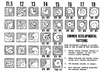

dvorak-tropical-cyclone

Definition: The Dvorak technique (developed between 1969 and 1984 by Vernon Dvorak) is a widely used system to estimate tropical cyclone intensity (which includes tropical depression, tropical storm, and hurricane/typhoon/intense tropical cyclone intensities) based solely on visible and infrared satellite images. Within the Dvorak satellite strength estimate for tropical cyclones, there are several visual patterns that a cyclone may take on which define the upper and lower bounds on its intensity. The primary patterns used are curved band pattern (T1.0-T4.5), shear pattern (T1.5–T3.5), central dense overcast (CDO) pattern (T2.5–T5.0), central cold cover (CCC) pattern, banding eye pattern (T4.0–T4.5), and eye pattern (T4.5–T8.0).
Source: Wikipedia
Wikipedia Page (Something wrong with this association? Let us know.)
Wikidata Page (Something wrong with this association? Let us know.)